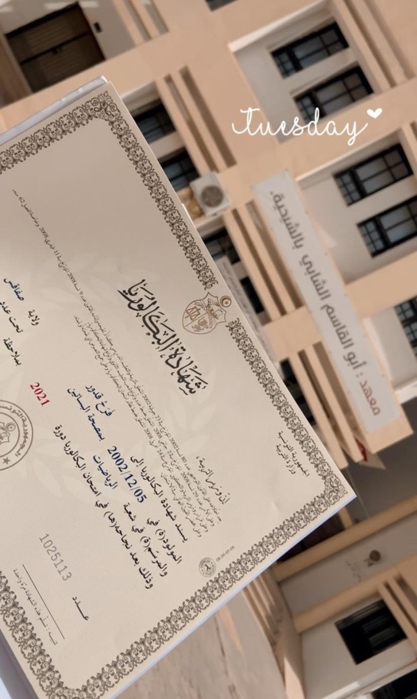

Baccalauréat
J'ai obtenu mon Baccalauréat en Mathématiques en 2021, avec mention. Cette étape marquante a consolidé mon intérêt pour les sciences et la technologie, me préparant ainsi à poursuivre mes études en ingénierie des systèmes informatiques.